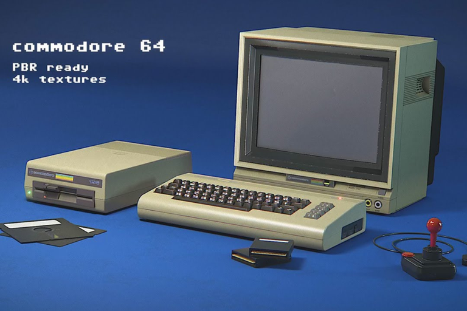

Un poco sobre mi
Un poco de mi historia
Descubrí la computadora a corta edad, mientras me encontraba cursando el 3er año de la escuela secundaria (eso fué a mediados de la década del '80, mas precisamente año 1985), en esos años, comencé con un curso privado (en las escuelas no existian las computadoras) de "Programación en Basic" usando una Commodore 64 conectada a un TV y con una diskettera externa.
Cursé mis estudios secundarios en la vieja Escuela Nacional de Comercio Nº2 "Gral. Manuel Obligado." ya que había ingresado en esa institución con la idea de seguir mis estudios Universitarios en Ciencias Económicas...
Pero el haber tomado contacto con esa maravilla tecnológica hizo que cambiara mi idea a futuro y me volcara a la informática.
Y es así, que luego de graduarme de "Perito Mercantil" promoción 1987, ingresé a la U.T.N. - F.R.R. para comenzar mis estudios en Ingeniería en Sistemas de Información.
Pero en aquellos días, la carrera era muy demandante de tiempos y además todas las materias eran anuales, no existía la promocion, y practicamente todas las materias de un año eran correlativas con las del siguiente año, por lo que habia que hacer un gran esfuerzo por regularizar y aprobar cada materia para poder avanzar....
Asi llegue hasta terminar de cursar el 4to. año con un alto porcentaje de materias aprobadas (pero no las suficientes) y debido a un fuerte cambio en el plan de estudios, tuve que reiniciar mis estudios universitarios desde cero practicamente, pero ahora con algunas pocas materias cuatrimestrales y la posibilidad de promocionar parte de los examennes finales de las materias....
Así llegué nuevamente hasta el final del 4to. año de cursado con poco mas de la mitad de la carrera aprobada...
Luego de 9 largos años de estar intentando avanzar en mi carrera, decidí abandonar mis estudios y seguir con mi trabajo de enseñanza de cursos de computacion en los diversos institutos privados de aquellas épocas
Los años pasaron, los trabajos privados cambiaban como los tiempos que vivíamos y cambié un poco mi orientacion académica y me recibi, en un Terciario Provincial (CENT 51) de "Tecnico Superior en Gestión Organizacional".
Ya en esos años me encontraba trabajando en la Escuela de Formacion Profesional Nº7, y simultáneamente conseguí mi segundo título terciario provincial, esta vez de "Maestro de Formacion Profesional en Informática de Oficina".
A partir de allí, algunos años mas tarde, conseguí un postítulo de "Especialización Docente de Nivel Superior en Educación y TIC y sigo estudiando y perfeccionandome en mi especialidad e incorporando nuevos conocimientos, capacidades y competencias a pesar de mis 54 años...
Ahora, incursionando en el area del Desarrollo Web, junto al Informatorio, y todo lo relacionado a ello... y seguiré...
Algunos de mis pasatiempos

Mis Conocimientos
Manejo S.O. Windows
Manejo avanzado del los Sistemas Operativo MS. Windows 9x, XP, Me, 7, 8.x, 10.
MS Office
Manejo avanzado de las diversas suites ofimaticas MS Office 95 a MS Office 2021.
Suite CorelDRAW
Manejo intermedio de la aplicación CorelDRAW y CorelPhotoPaint.
Google Docs
Manejo intermedio de las aplicaciones de Google Docs, Google Drive y Google Fotos.